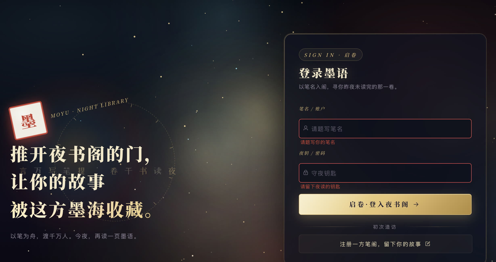
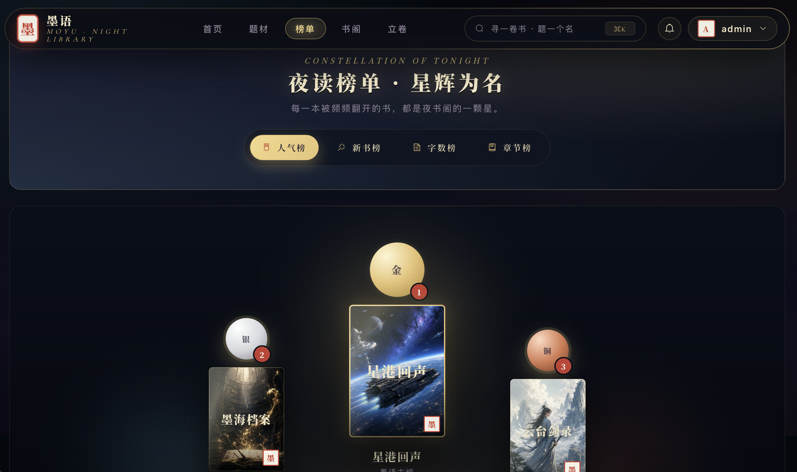

Work / Content Platform · RuoYi · Full-stack
Moyu Night Library
A full-stack web fiction platform shaped around a night-library experience, connecting reader discovery, author publishing, and content governance in one workflow.
- Full-stack Developer
- Active Development
- Spring Boot / Vue 2 / MySQL
- No. 04

One Content Loop for Creation, Review, and Reading
Moyu is not a single reading page. It is a web fiction business platform spanning content production, platform governance, and reader consumption. novel-app serves readers and authors, while ruoyi-ui provides the operations console. Both share the Spring Boot API and authorization model.
The platform organizes its workflow around books, chapters, drafts, bookshelves, subscriptions, comments, ratings, reports, reviews, and notifications, allowing each content change to continue into moderation, distribution, and feedback.

From Discovering a Book to Following Every Update
Readers discover content through recommendations, genres, rankings, search, and history before moving into book details and the reader. Bookshelves, subscriptions, reading progress, history, and notifications preserve continuity across sessions. Ratings, likes, comments, and reports feed reader signals back into governance.

A Recoverable and Traceable Writing Workflow
The author workspace covers profiles, works, covers, chapters, and drafts, including TXT and DOCX chapter import. The editor provides autosave, version history, and sensitive-content previews to reduce losses caused by interruptions, accidental edits, or unclear platform rules during long-form writing.
Submitted books and chapters enter explicit review states. Authors can track outcomes and notifications, while rejected content retains its reason and editing path to keep platform rules actionable.
Risk Warnings First, Human Review for Final Decisions
The governance console supports book and chapter review, batch actions, rejection templates, sensitive-term context, risk ordering, and operational dashboards. Sensitive content follows a warning plus human review policy instead of automatic rejection. Dictionaries, allowlists, hit records, and review snapshots support each decision.
Report handling includes aggregation, content hiding and restoration, outcome notifications, and operation logs, turning reader feedback into an auditable governance loop.
A Night-Reading Theme Across Discovery and Rankings
The interface uses dark night scenes, warm page tones, and physical book covers as primary visual signals, while keeping search, genre navigation, bookshelves, and creation entry points stable. The constellation ranking reinforces positions and titles visually without replacing familiar filters and list controls.
Two Frontends, One API, Reproducible Delivery
The system follows RuoYi module boundaries, separating reader and author experiences, operations, domain services, authorization, and infrastructure. MySQL stores business data, Redis handles sessions and hot state, JWT connects frontend identity, and Docker Compose assembles the backend, database, and frontend runtime.